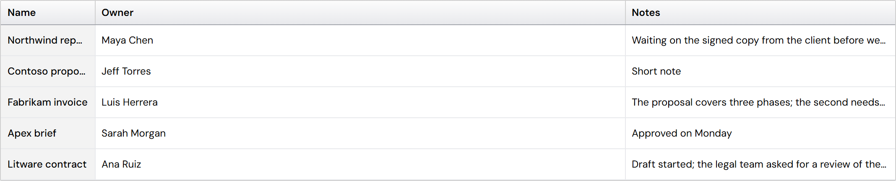
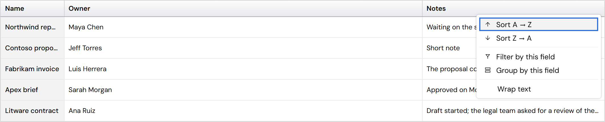
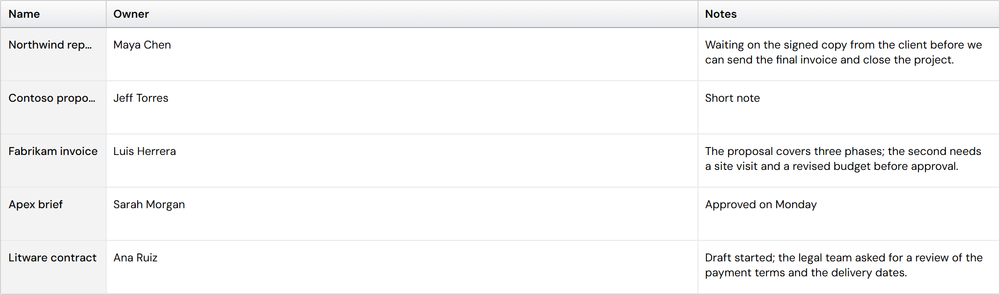
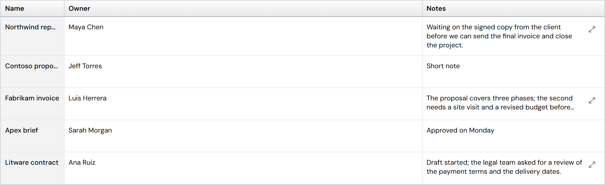
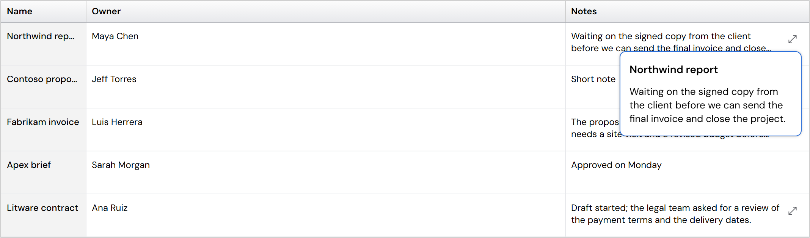

Wrap text: an option in the column menu
As you decided: wrapping is something people turn on per column. A wrapped column uses the grid's row heights (2 lines at Medium, 3 at Tall, "…" after that), and a row with a wrapped column starts every cell at the top. Turning it on in a Short grid moves the grid to Medium.
Built



The static Table works the same way when the app sets wrap: true on a column (it has no column menu), and its plain columns no longer wrap with the wide line gap.
To choose: seeing text that is cut
An icon button (never a "read more" link) appears only on cells whose text is cut. What it does:


- A keeps the text in the table and suits a few long notes; the grid measures that one row (the scrolling stays correct), and other rows move down while it is open.
- B never moves the rows and works for any amount of text (a long note scrolls inside the panel); Escape or a click outside closes it.
Suggestion: B, the popover. Rows never jump while people scan, it handles any length, and it is how Excel, Airtable and Notion show a cut cell (a panel for the full text). A is fine for short notes, but a long one would push the rest of the list far down.